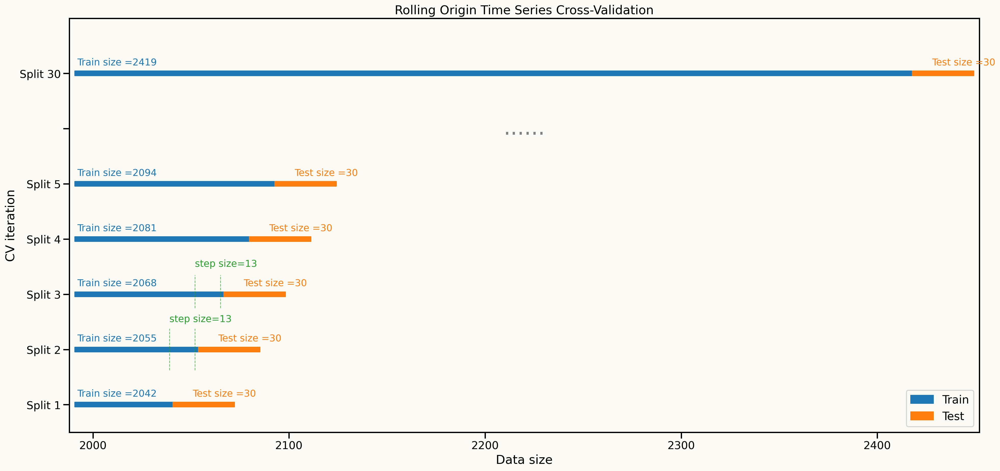
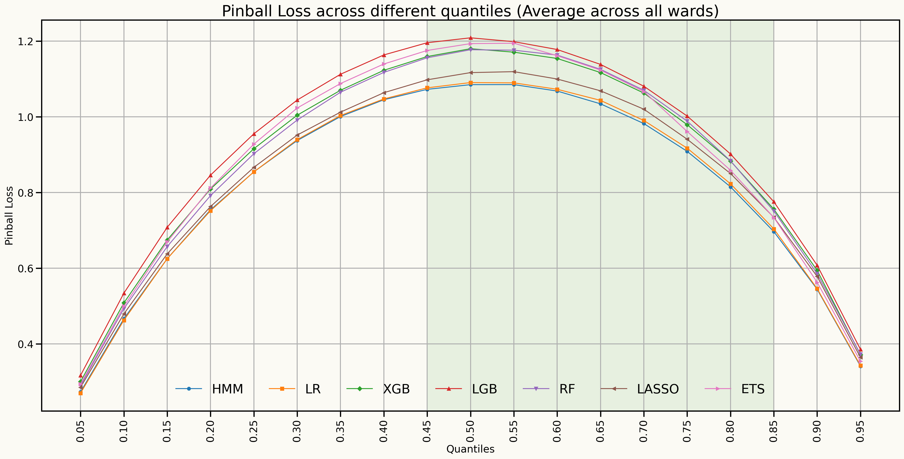
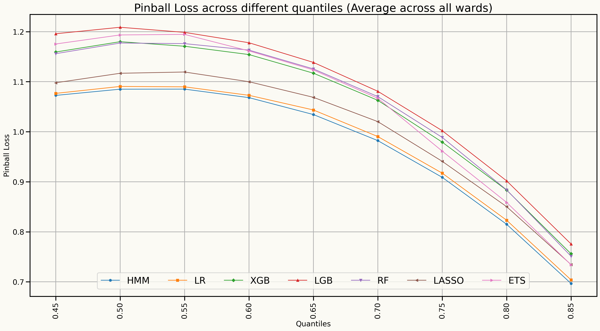
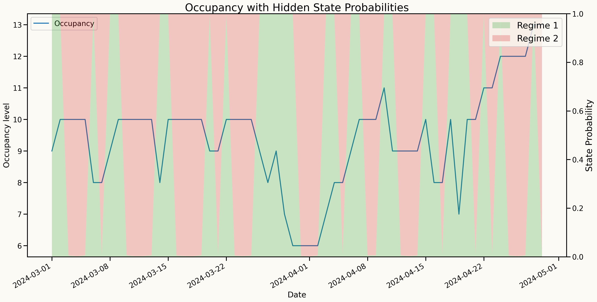

Forecasting Mental Health Hospital Bed Occupancy: A Regime-Switching AutoRegressive Hidden Markov Model Approach
Mustafa Aslan, Cardiff University, UK
Lead supervisor: Prof. Bahman Rostami-Tabar
Co-supervisor: Dr. Jeremy Dixon
Data Lab for Social Good
Cardiff University, UK
16 Sep 2025
Outline
The problem
Data and preliminary analysis
Experiment design and Modelling framework
Results
Key findings
Next steps
The Problem
Current Systemic Issues in Patient Flow
- Unpredictable occupancy levels can result in redundant staffing and resource allocation, driving up costs, or in understaffing, which compromises patient care.
- Spikes in occupancy level drive overtime, sickness, and staff burnout.
- Lack of analytical solutions that can capture the complexity and uncertainty of patient flow and bed availability limits proactive decision-making.
Why is it important?
Why is an efficient bed management system crucial?
- Hospital beds are one of most costly healthcare resources.
- NHS rates for acute mental health beds are generally between £760 and £850 per day in 2025
- Bed shortages force some patients to wait in corridors, impacting care quality and safety.
- Bed shortages increase staff pressure, burnout, and operational costs.
Why a reliable forecasting approach is needed?
- Mental health demand is volatile and influenced by unpredictable crisis, by seasonality, epidemics, and unforeseen events.
- A reliable forecasting approach enables timely staffing, resource allocation, and improved patient care.
- Anticipating demand allows decision-makers to balance scarce resources while improving patient flow and safety.
- Robust forecasts enhance resilience to unexpected surges and reduce staff burnout.
What do we forecast?
- Daily hospital bed occupancy for 7 wards in a UK hospital.
- Forecast horizon: 30 days ahead, supporting medium-term planning for bed allocation and staffing, generated at the end of each month for the following month.
- Focus on probabilistic forecasting to capture uncertainty, offering prediction intervals rather than single-point estimates using a reliable model.
Key Research Questions
How can we accurately forecast hospital bed occupancy to improve resource allocation and patient care?
How can probabilistic forecasting models be developed to account for the inherent uncertainty in patient flow and bed availability?
What are the hidden factors influencing bed occupancy, and how can they be incorporated into forecasting models?
Data and preliminary analysis
Dataset
Daily hospital occupancy data from a UK hospital with 7 wards, spanning from July 2018 to April 2025. The dataset includes:
- Daily occupancy counts for each ward (daily number of patients staying in each ward)
- Date-related features: day of the week, month, year, day of the month, week of the year
- Holiday indicators
Data characteristics
Strong upward trend in occupancy over time
Spike after COVID-19 pandemic

Seasonal patterns
Day of the week seasonality
Seasonal patterns
Monthly seasonality
Effect of holidays
Key insights from data analysis
An important assumption to model: Stationarity
One approach to make the series stationary is to take the first difference of the series.
Original series: \(y_t, y_{t-1}, y_{t-2}, y_{t-3}, \ldots\)
Differenced series: \(y_t - y_{t-1}, y_{t-1} - y_{t-2}, y_{t-2} - y_{t-3}, \ldots\)
Key insights from data analysis
Information from ACF and PACF plots after differencing
Key insights from data analysis
Alternative approach to make the series stationary and keep the dependence structure
An important assumption to model: Stationarity
Information from ACF and PACF plots after detrending
Regime-Switching AutoRegressive Hidden Markov Model (RS-ARHMM)
Let \(y_t\) be the observed value at time \(t\), modeled as a function of its \(p\) lagged values, the regime-specific parameters associated with the hidden state \(s_t\), and exogenous variables \(\mathbf{X}_t = (X_{t1}, \ldots, X_{tM})\).
The RS-ARHMM can be expressed as follows:
\[ y_t^{(s)} = \beta_{0}^{(s)} + \sum_{i=1}^{p} \beta_{i}^{(s)} \, y_{t-i} + \sum_{j=1}^{M} \beta_{p+j}^{(s)} \, X_{tj} + \epsilon_t^{(s)}, \]
where:
- \(\beta_{i}^{(s)}\) are the coefficients for the lagged values for regime \(s\),
- \(\beta_{p+j}^{(s)}\) are the coefficients for the exogenous variables for regime \(s\),
- \(M\) is the number of exogenous variables,
- \(\epsilon_t^{(s)}\) is the error term for regime \(s\).
The Markov property: \[ P(s_t = k \mid s_{1:t-1}) = P(s_t = k \mid s_{t-1}), \quad \forall t \geq 2. \]
A HMM has the following components:
- \(S\): The set of regimes, \(\mathbb{S} = \{S_1, S_2, \ldots, S_K\}\).
- \(P\): The transition probability matrix
- \(p_{ij} = P(s_t = S_j \mid s_{t-1} = S_i)\) is the probability of transitioning from regime \(S_i\) to regime \(S_j\), s.t. \(\sum_{j=1}^{K} p_{ij} = 1\).
Transition matrix \(P\) is defined as:
\[ P = \begin{pmatrix} p_{11} & \cdots & p_{1K} \\ \vdots & \ddots & \vdots \\ p_{K1} & \cdots & p_{KK} \end{pmatrix} \]
Modeling Framework
Forecasting with RS-ARHMM
- Forecast Computation: The final forecast for each time step is a weighted average of the forecasts from each regime,
weighted by the predicted regime probabilities:
\[ \hat{y}_{T+h} = \sum_{j=1}^{K} P(s_{T+h} = S_j) \, \hat{y}_{T+h}^{(S_j)} \]
- State Prediction: We predict the most probable state sequence for the next \(h\) time steps using the transition matrix \(\mathbf{P}\). The probability of being in state \(S_j\) at time \(T+h\) is computed recursively as:
\[ P(s_{T+h} = S_j) = \sum_{i=1}^{K} P(s_{T+h-1} = S_i) \, p_{ij} \]
- Regime-specific forecasts: For each predicted regime, we utilize the corresponding regression model to forecast the observation at that time step. The predicted observation \(\hat{y}_{T+h}\) for state \(s_{T+h}\) is computed as:
\[ \hat{y}_{T+h}^{s_{T+h}} = \beta_{0}^{(s_{T+h})} + \sum_{i=1}^{p} \beta_{i}^{(s_{T+h})} \, y_{T+h-i} + \sum_{j=1}^{M} \beta_{p+j}^{(s_{T+h})} \, X_{T+h,j} \]
RS-ARHMM Parameter Estimation
EM (Expectation-Maximization) Algorithm
Iteratively estimates parameters \(\Theta = \{\beta^{(s)}, \sigma^{2(s)}, P, \pi\}\) to maximize likelihood.
Alternates between two steps:
- E-Step: Estimate regime probabilities given current \(\Theta\).
- M-Step: Update \(\Theta\) using these probabilities.
1. E-Step
State probability:
\[ \gamma_t(i) = P(s_t = S_i \mid y_{1:T}, \Theta^{(k)}) \]Transition probability:
\[ \xi_t(i,j) = P(s_t = S_i, s_{t+1} = S_j \mid y_{1:T}, \Theta^{(k)}) \]Computed via Forward-Backward algorithm:
- Forward:
\(\alpha_t(i) = P(y_{1:t}, s_t = S_i \mid \Theta) = \sum_{j=1}^{K} \alpha_{t-1}(j) p_{ji} o_i(y_t)\)
- Backward:
\(b_t(i) = P(y_{t+1:T} \mid s_t = S_i, \Theta) = \sum_{j=1}^{K} p_{ij} o_j(y_{t+1}) b_{t+1}(j)\)
Emission (observation) likelihood:
\[
o_i(y_t) = \frac{1}{\sqrt{2\pi \sigma_i^2}} \exp\left( -\frac{(y_t - \mu_{i,t})^2}{2\sigma_i^2} \right)
\]
where \(\mu_{i,t}\) is AR + exogenous mean for state \(i\).
2. M-Step
Update parameters using weighted averages with \(\gamma_t(i)\):
Transition matrix:
\[ p_{ij}^{(k+1)} = \frac{\sum_{t=1}^{T-1} \xi_t(i,j)}{\sum_{t=1}^{T-1} \gamma_t(i)} \]Initial state:
\[ \pi_i^{(k+1)} = \gamma_1(i) \]Regression (AR/exog) coefficients:
\[ \beta^{(i,k+1)} = (\mathbf{X}^T \mathbf{W}_i \mathbf{X})^{-1} \mathbf{X}^T \mathbf{W}_i \mathbf{y} \]
Where \(\mathbf{W}_i = \text{diag}(\gamma_1(i),\dots,\gamma_T(i))\)
- Variance:
\[ \sigma_i^{2(k+1)} = \frac{\sum_{t=1}^T \gamma_t(i)(y_t-\mu_{i,t})^2}{\sum_{t=1}^T \gamma_t(i)} \]
Repeat E-M Steps until convergence:
\[|\ell(\Theta^{(k+1)}) - \ell(\Theta^{(k)})| < \epsilon\]
Why RS-ARHMM?
Captures regime changes in highly volatile time series data (e.g., healthcare), integrating them into the forecasting process, making it more accurate and reliable predictions.
Traditional statistical and modern machine learning models fail to account for such regime shifts.
Models complex dependencies and non-linear relationships with reduced risk of overfitting and less reliance on extensive hyperparameter tuning.
Produces interpretable results through regime-specific parameters.
Provides reliable forecasts that incorporate uncertainty arising from regime changes.
Benchmark models
Statistical models:
Exponential Smoothing (ETS): A state space time series model capturing level, trend, and seasonality.Linear Regression: A statistical model that estimates the linear relationship between predictors and a response variable.Lasso Regression: A regression method with L1 regularization, useful for variable selection and preventing overfitting.
Machine Learning models:
XGBoost: An optimized gradient boosting library designed to be highly efficient and flexible. It uses level-wise tree growth, building trees level by level horizontally.LightGBM: A gradient boosting framework that uses tree-based learning algorithms, known for its speed and efficiency. It uses leaf-wise tree growth.Random Forest: An ensemble learning method that builds multiple decision trees and merges them together to get a more accurate and stable prediction.
Probabilistic Forecasting using Conformal Prediction
Conformal Prediction for Time Series
- A distribution-free method for constructing prediction intervals
- A way to quantify the uncertainty of point forecasts by generating prediction intervals
Steps to Generate Prediction Intervals
- Point Forecasting
- Generate point forecasts \(\hat{y}_{t+h}\) for the desired forecast horizon \(h\) using rolling-origin cross-validation on a
calibration setof 500 observations per horizon.
- Residual Calculation
\[ r_{t+h} = y_{t+h} - \hat{y}_{t+h} \]
where \(y_{t+h}\) are the actual observed values and \(\hat{y}_{t+h}\) are the point forecasts for \(t+h\).
- Nonconformity Scores \[ A_{t+h} = |r_{t+h}| \]
- Quantile Calculation
\[ q_{1-\alpha}^{(h)} = \text{Quantile}_{1-\alpha}(\{A_{t-n+h}\}_{t=t-n}^{n}) \]
where \(n\) is the size of the calibration set and \(1 - \alpha\) is the desired coverage level
- Prediction Intervals
\[ \left[\hat{y}_{t+h} - q_{1-\alpha}^{(h)}, \hat{y}_{t+h} + q_{1-\alpha}^{(h)}\right] \]
- Distribution Approximation
\[ y_{t+h}^{(i)} = \hat{y}_{t+h} + r_{t+h}^{(i)}, \quad r_{t+h}^{(i)} \in \{r_{t+h}^{(1)}, r_{t+h}^{(2)}, \ldots, r_{t+h}^{(n)}\} \]
Forecasting metrics
Point Forecasting Metrics
Root Mean Squared Error (RMSE) \[ RMSE = \sqrt{\frac{1}{n} \sum_{t=1}^{n} (y_t - \hat{y}_t)^2} \]
Mean Absolute Error (MAE) \[ MAE = \frac{1}{n} \sum_{t=1}^{n} |y_t - \hat{y}_t| \]
Probabilistic Forecasting Metrics
- Qunatile Loss (QL) \[ QL_{\alpha} = 2 \sum_{t=1}^{h} \left[\alpha (y_t - \hat{y}_t^{(\alpha)}) \mathbb{1}_{\{y_t > \hat{y}_t^{(\alpha)}\}} + (1 - \alpha) (\hat{y}_t^{(\alpha)} - y_t) \mathbb{1}_{\{y_t \leq \hat{y}_t^{(\alpha)}\}}\right] \]
Feature engineering
- Time-based features
- Public holidays
- Lagged features
- Fourier terms
- Rolling window features
Cross validation setup
Rolling-origin cross-validation is used to evaluate model performance over time

Results
Point Forecast results
| ward_0 | RMSE | MAE |
|---|---|---|
| HMM | 3.208 | 2.757 |
| linearRegression | 3.258 | 2.804 |
| Lasso | 3.268 | 2.832 |
| RandomForest | 3.365 | 2.885 |
| LightGBM | 3.364 | 2.905 |
| XGBoost | 3.433 | 2.996 |
| ets | 3.679 | 3.168 |
| ward_1 | RMSE | MAE |
|---|---|---|
| ets | 3.646 | 3.169 |
| Lasso | 3.701 | 3.220 |
| RandomForest | 3.707 | 3.229 |
| linearRegression | 3.711 | 3.233 |
| HMM | 3.712 | 3.231 |
| LightGBM | 3.720 | 3.241 |
| XGBoost | 3.770 | 3.277 |
| ward_2 | RMSE | MAE |
|---|---|---|
| HMM | 2.843 | 2.406 |
| linearRegression | 2.862 | 2.426 |
| Lasso | 2.975 | 2.538 |
| LightGBM | 2.983 | 2.544 |
| XGBoost | 3.036 | 2.605 |
| RandomForest | 3.141 | 2.723 |
| ets | 3.210 | 2.800 |
| ward_3 | RMSE | MAE |
|---|---|---|
| Lasso | 1.992 | 1.664 |
| LightGBM | 2.009 | 1.700 |
| linearRegression | 2.044 | 1.724 |
| RandomForest | 2.058 | 1.730 |
| HMM | 2.078 | 1.749 |
| XGBoost | 2.098 | 1.776 |
| ets | 2.475 | 2.133 |
| ward_4 | RMSE | MAE |
|---|---|---|
| Lasso | 2.320 | 1.999 |
| linearRegression | 2.470 | 2.135 |
| HMM | 2.532 | 2.211 |
| ets | 2.592 | 2.244 |
| XGBoost | 2.660 | 2.314 |
| RandomForest | 2.825 | 2.486 |
| LightGBM | 3.344 | 2.946 |
| ward_5 | RMSE | MAE |
|---|---|---|
| HMM | 2.500 | 2.122 |
| RandomForest | 2.503 | 2.129 |
| LightGBM | 2.511 | 2.143 |
| XGBoost | 2.512 | 2.144 |
| Lasso | 2.517 | 2.144 |
| linearRegression | 2.532 | 2.156 |
| ets | 2.603 | 2.235 |
Forecast Distributions (Quantile scores)
Forecast Distributions (Quantile scores)

Forecast distributions (Quantile scores for 45% to 85%)

Model’s Explainability

Transition probabilities
| T. Matrix | Regime 1 | Regime 2 |
|---|---|---|
| Regime 1 | 0.666 | 0.334 |
| Regime 2 | 0.487 | 0.513 |
Standard Deviations
| Std. Dev. | Regime 1 | Regime 2 |
|---|---|---|
| sd | 1.393 | 0.006 |
Key findings
Learning outcomes from the current experiments
Although AR-RHMM may not always outperform all benchmark models in point forecasting metrics, there is a significant improvement in probabilistic forecasting, particularly in quantile loss across 40% and 85% quantiles.
The model is more reliable for probabilistic forecasting since it accounts for regime changes and provides a distribution of possible future values, making it suitable for decision-making in hospital resource management.
The model performs consistently well interms of
probabilistic forecastingsince the model is probabilistic in nature and captures regime changes.
Next steps
Next steps
Extend the AR-HMM to a multivariate framework (VAR-HMM) to jointly model multiple wards, capturing interdependencies and shared patterns in bed occupancy across different wards.
Develop an optimization framework that utilizes the probabilistic forecasts from the AR-HMM and VAR-HMM models to optimize bed allocation and resource management.
Test the models in real-world scenarios, collaborating with hospital staff to refine the models based on practical feedback and operational needs.
Any questions or thoughts? 💬